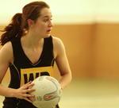

Roses
Roses 2009 LIVE: Sunday
Join Nouse for the final day of Roses 2009
Lancaster
York
Roses reports
Sublime York win third consecutive Roses
It is almost criminal that this weekend will be recorded in the history books as merely a ‘York win.’ Future generations looking back will never fully appreciate the magnitude or the comprehensiveness of York’s victory in the Roses tournament of 2009.
Chaos and Cheerleading
Well it’s a bloody good job that this year’s tournament didn’t go down to the wire, because nobody left Central Hall with any semblance of what had gone on for the past hour, let alone the preceding three days.
Dignitaries put on show
Croquet, not known as the most competitive or interesting of games, had a re-birth as Chancellor battled Chancellor, Vice-Chancellor battled Vice-Chancellor and Sports Union President battled, well, you get the picture. In the end, Lancaster emerged victorious.
Cheng inspires ballers
Re-invoking that long-lost Presbyterian work ethic, Ronan Joyce’s men’s firsts handed out a basketballing clinic to their Lancastrian counterparts on Sunday.
Football firsts hit four in easy win
If Lancaster Sport were a dog, in this game York picked up its feeble carcass, rolled it up in some old carpet, read a brief memoriam and threw it into a quarry. After last year’s defeat, revenge had been a long time coming. A year in fact. When it came, it was served up in the best way possible: ice cold.
York clean sweep on slopes
YUsnow picked up a complete set of the fourteen Roses snowsports points available with a majestic performance at Rossendale on Saturday night.
Triple squash whitewash
In 1939, Maurice Gamelin, the French World War Two general, said the French forces would “dismiss Germany like a man hitting a lame rabbit with a spade”. Ever since, no-one has really topped Gamelin’s chronic lack of prescience. Until, that is, the men’s firsts squash match, at which Lancaster’s captain Daglish proclaimed that he was “60% confident of victory”.
Badminton maximum for York
On a superlative first Roses day for York, the badminton squad carried on their fine BUCS form to bring home all fourteen available points.
Defeat for men’s water polo against strong Lancs team
York couldn’t keep up with Lancaster’s regular scoring in Saturday night’s men’s water polo
Heavy defeat for women’s water polo
York women’s water polo found themselves overwhelmed by Lancaster on Saturday night
Gutsy York beaten in women’s volleyball
A straight sets Lancaster victory in the women’s volleyball failed to tell the whole story on Saturday afternoon
Women edge basketball thriller
York’s Basketball Ladies secured a spectacular win in a Roses classic yesterday afternoon at the Sport’s Centre
York come back not enough in heated classic
A fantastic York come back in a manic second half was not enough for the hockey men’s thirds yesterday afternoon on the Astroturf
Late pressure not enough for men’s hockey firsts
In a rare blemish, on an otherwise hugely successful Saturday, York hockey firsts were defeated by Lancaster
First-half flourish seals win for hockey seconds
A strong first half York performance was the difference in a win for the Men’s Hockey seconds, the sole York hockey victory of Saturday afternoon.
York keep dominant Lancaster at bay in women’s hockey
York Women’s Hockey firsts drew with their Lancaster opponents on Saturday, in a game that made up for a lack of goals with thrilling chances and quality play.
Women’s rugby firsts edge tight encounter
York’s rugby women recovered from a half time deficit to claim a hard fought win on the 22 Acres
York men’s seconds brush aside Lancaster in rugby
An impressive display saw York run out easy victors in the first Rugby match of Saturday afternoon.
Mixed results for York pool teams
York Men’s captain Tom Birch ensured that York took a share of the spoils in the Pool after the women’s team were defeated by a strong Lancaster outfit.
Trampolining title goes to Lancaster
Camilla Jenkins, witness lycra, leg-slapping and a victory for Lancaster, reports from Saturday’s trampolining.
Snooker team pocket a 5-0 victory for York
York whitewashed Lancaster in the pool, winning 5-0 without losing a single frame in all fives matches on Saturday
 Indoor football firsts deliver the goods for York
Indoor football firsts deliver the goods for York
In the indoor football both the men’s and women’s firsts ties were won by York, whilst the men’s thirds and seconds, as the women’s seconds, saw Lancaster victorious.
Late Lancaster goal floors women’s hockey seconds
A late Lancaster goal split the teams in Saturday morning’s women’s seconds hockey match
York hammer Lancaster in men’s volleyball
A straight sets victory this afternoon was the perfect swansong for some of York’s volleyballers
Emphatic win for York rugby firsts
York men’s rugby firsts swept Lancaster aside in front of a boisterous crowd on the 22 acres this afternoon
Men’s senior eights cap fine morning for York’s rowers
A narrow victory for the men’s senior eight crew meant York picked up the larger share of the Roses rowing points
Hudson guides cricket firsts to Roses victory
A superb unbeaten 66 from Tom Hudson secured victory for York men’s firsts in a rain hampered match.
Surprise victory for York netball firsts
York’s netball firsts upset Lancaster 49-22 on Saturday in a pulsating and boisterous Roses occasion
York storm to overall victory in Roses karting exhibition
The university’s Karting club lead from the front to take the first and second podium positions in their Roses Exhibition race on Teesside yesterday.
 Determined York narrowly beaten in american football
Determined York narrowly beaten in american football
On a makeshift pitch on the 22 acres, the York Centurions displayed plenty of effort and determination in going down 12-28 to the Lancaster Bombers in their first full American Football fixture.
Double badminton win for York in mixed and men’s 2nds
York’s badminton mixed and second teams delivered a double blow to Lancaster in
Friday morning’s opening event, winning their matches 8-1 and 6-3 respectively.
Rout for York in 5-0 men’s squash win
The enigmatic John Halstead was at the Sports Centre to witness a thundering 5-0 victory for York’s men in the squash firsts on Friday.
Superb squash seconds seal early points for York
A 5-0 whitewash from the men’s squash seconds gave York two early Roses points this afternoon.
Men power York to sevens sweep
In a positive omen ahead of tomorrow’s XVs encounters, York men’s rugby completed a clean sweep of the preliminary sevens fixtures.
York claim long-awaited Karate win
York won the Karate in a packed Dance Studio today, giving Captain Ashley Clews-Jones his first Roses win in four years at the university.
Mixed fortunes for York’s women in rugby sevens
York’s firsts won their match comfortably as the seconds were caught cold in defeat this afternoon.
Cricket Seconds secure York’s first Roses points
A well-executed 46 from Stephen Walwyn guided York’s cricket seconds to Roses victory on Thursday afternoon.
York slip behind following Roses canoe events
York must overhaul an eight-point deficit this weekend after a disappointing and controversial defeat for the canoe club in the opening Roses events on Saturday.
Roses 2009 Preview: Sunday 10th May
With Sunday likely to be the decisive day in Roses 2009, Nouse previews the action.
Roses 2009 Preview: Saturday 9th May
Nouse offers the complete lowdown on the hectic Saturday of Roses.
Roses Handbook: History of the Tournament
The names and golden moments of the Roses tournament form a rich tapestry down the years but, for all the changes the two universities and the wider world have undergone, there has remained many enduring constants.
Roses Handbook: Flashback to Lancaster 2008
Richard de Boltz hates being reminded about it, but the hockey first teamer’s decisive stroke settled one of the tightest and most dramatic Roses tournaments over in Lancaster last year.
Roses 2009 Preview: Friday 8th May
Nouse guides you through the events taking place on the opening day of Roses 2009, Friday 8th May.
Schedule finalised for 45th annual Roses tournament
Preparations can step up another gear for the annual Roses battle against Lancaster after the finished schedule for the tournament was released today.
Video Updates from YSTV
Produced by York Student Television,
released under a CC BY-NC-ND 2.0 license